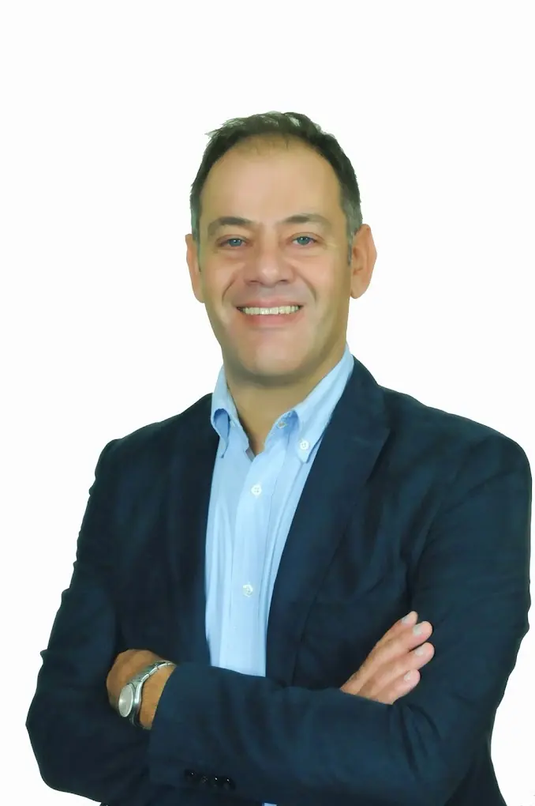
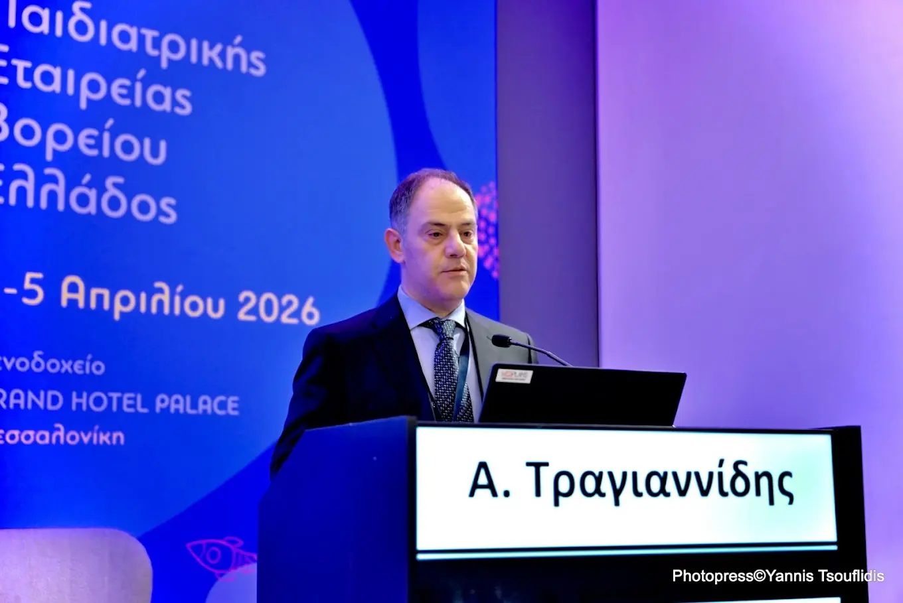
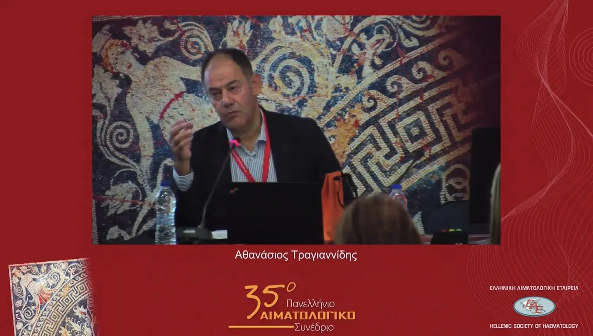
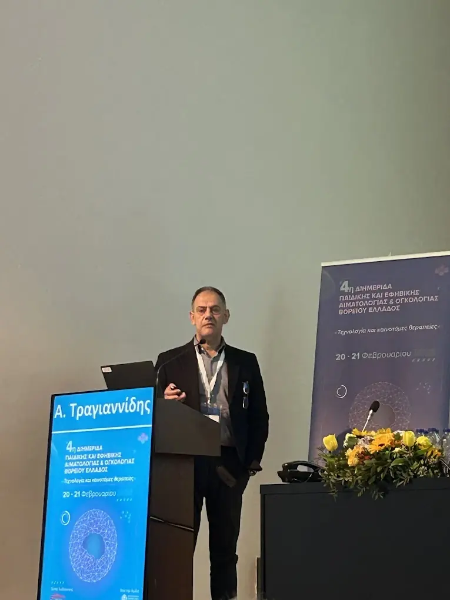
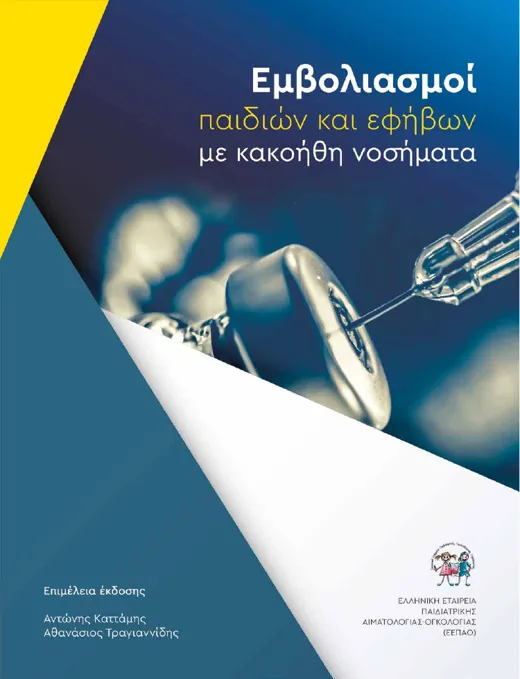

Εξειδικευμένη φροντίδα για παιδιά και εφήβους με αιματολογικά και ογκολογικά νοσήματα — με την εμπειρία της πανεπιστημιακής κλινικής και τη ζεστασιά ενός ιατρείου που γνωρίζει κάθε οικογένεια.Specialist care for children and adolescents with blood disorders and cancer — with the experience of a university clinic and the warmth of a practice that knows every family.
δημοσιεύσεις σε διεθνή επιστημονικά περιοδικά (PubMed)publications in international journals (PubMed)
400+
ανακοινώσεις και επιστημονικές εργασίεςconference papers and scientific presentations
20+
χρόνια στην παιδιατρική αιματολογία–ογκολογίαyears in paediatric haematology–oncology
5,0
στο Google, από δεκάδες αξιολογήσεις γονέωνon Google, from dozens of parents' reviews

MD · PhD · FECMMΙατρική Σχολή ΑΠΘ · Β΄ Παιδιατρική Κλινική, ΑΧΕΠΑAUTh Medical School · 2nd Paediatric Clinic, AHEPA
Ο γιατρόςThe doctor
Επιστημονική γνώση, με ανθρώπινο πρόσωποScientific depth, with a human face
Ο Αθανάσιος Τραγιαννίδης είναι παιδίατρος με εξειδίκευση στην παιδιατρική αιματολογία και ογκολογία. Είναι Καθηγητής Παιδιατρικής–Παιδιατρικής Αιματολογίας-Ογκολογίας στην Ιατρική Σχολή του Αριστοτελείου Πανεπιστημίου Θεσσαλονίκης και εργάζεται στο Αιματολογικό-Ογκολογικό Τμήμα της Β΄ Παιδιατρικής Κλινικής, στο νοσοκομείο ΑΧΕΠΑ.Athanasios Tragiannidis is a paediatrician specialising in paediatric haematology and oncology. He is Professor of Paediatrics–Paediatric Haematology-Oncology at the Medical School of the Aristotle University of Thessaloniki and works at the Haematology-Oncology Unit of the 2nd Paediatric Clinic, AHEPA University Hospital.
Σπούδασε Ιατρική στο Πανεπιστήμιο της Τεργέστης, απ’ όπου αποφοίτησε με άριστα, και έλαβε το διδακτορικό του από το ΑΠΘ, επίσης με άριστα. Μετεκπαιδεύτηκε στην Παιδιατρική Αιματολογία-Ογκολογία του Πανεπιστημίου του Münster στη Γερμανία, με υποτροφία του DAAD.He studied medicine at the University of Trieste, graduating with distinction, and earned his doctorate from AUTh, also with distinction. He trained further in Paediatric Haematology-Oncology at the University of Münster in Germany on a DAAD fellowship.
Είναι Πρόεδρος της Παιδιατρικής Εταιρείας Βορείου Ελλάδος, έχει τιμηθεί με τα βραβεία «Χωρέμειο» και «Κασίμος» και συνεπιμελήθηκε τις ελληνικές οδηγίες για τους εμβολιασμούς παιδιών με κακοήθη νοσήματα. Στο ιατρείο του στην Καλαμαριά, κάθε παιδί εξετάζεται με χρόνο, προσοχή και σαφείς εξηγήσεις για τους γονείς.He is President of the Paediatric Society of Northern Greece, has received the “Choremeio” and “Kasimos” awards and co-edited the Greek guidelines on vaccinating children with malignant diseases. At his practice in Kalamaria, every child is seen with time, care and clear explanations for parents.
Τρεις πόλεις, δύο δεκαετίες: από τις σπουδές στην Ιταλία και τη μετεκπαίδευση στη Γερμανία, στην πανεπιστημιακή κλινική της Θεσσαλονίκης.Three cities, two decades: from medical school in Italy and training in Germany to the university clinic in Thessaloniki.
1997
Τεργέστη, ΙταλίαTrieste, Italy
1997
Τεργέστη, ΙταλίαTrieste, Italy
Πτυχίο ΙατρικήςMedical degree
Πανεπιστήμιο της Τεργέστης — αποφοίτηση με άριστα.University of Trieste — graduated with distinction.
2006
ΘεσσαλονίκηThessaloniki
Διδακτορικό, με άρισταDoctorate, with distinction
ΑΠΘ — ο οστικός μεταβολισμός σε παιδιά με οξεία λεμφοβλαστική λευχαιμία.AUTh — bone metabolism in children with acute lymphoblastic leukaemia.
2007
Θεσσαλονίκη · ΑΧΕΠΑThessaloniki · AHEPA
Ειδικότητα ΠαιδιατρικήςBoard certification in Paediatrics
Β΄ Παιδιατρική Κλινική ΑΠΘ, στο νοσοκομείο ΑΧΕΠΑ.2nd Paediatric Clinic of AUTh, at AHEPA University Hospital.
2008 · 2017
Münster, ΓερμανίαMünster, Germany
ΜετεκπαίδευσηAdvanced training
Παιδιατρική Αιματολογία-Ογκολογία, Πανεπιστήμιο του Münster, με υποτροφία DAAD.Paediatric Haematology-Oncology, University of Münster, on a DAAD fellowship.
2010
Θεσσαλονίκη · ΑΠΘThessaloniki · AUTh
Ιατρική Σχολή ΑΠΘAUTh Medical School
Εκλογή στο διδακτικό-ερευνητικό προσωπικό της Ιατρικής Σχολής.Elected to the academic faculty of the Medical School.
ΣήμεραToday
Καλαμαριά · ΘεσσαλονίκηKalamaria · Thessaloniki
Κλινική, ιατρείο, κοινότηταClinic, practice, community
Πανεπιστημιακή κλινική, το ιατρείο στην Καλαμαριά και η προεδρία της Παιδιατρικής Εταιρείας Βορείου Ελλάδος.The university clinic, the practice in Kalamaria and the presidency of the Paediatric Society of Northern Greece.
ΕξειδίκευσηExpertise
Με τι μπορούμε να βοηθήσουμεHow we can help
Από ένα απλό εύρημα στη γενική αίματος μέχρι τη μακροχρόνια παρακολούθηση μετά από θεραπεία. Επιλέξτε ένα θέμα για να δείτε τι περιλαμβάνει.From a single finding on a blood count to long-term follow-up after treatment. Choose a topic to see what it involves.
Αναιμίες & διαταραχές ερυθρώνAnaemia & red cell disorders
Χλωμάδα, εύκολη κόπωση ή ένα εύρημα στη γενική αίματος είναι συχνά ο λόγος της πρώτης επίσκεψης. Η διερεύνηση ξεκινά από τα πιο απλά — σιδηροπενία, διατροφή, μια πρόσφατη λοίμωξη — και προχωρά, όπου χρειάζεται, στις κληρονομικές αιμοσφαιρινοπάθειες, όπως η μεσογειακή αναιμία, και σε σπανιότερες διαταραχές του ερυθροκυττάρου. Στόχος είναι μια σαφής διάγνωση με όσο το δυνατόν λιγότερες εξετάσεις για το παιδί και ένα πλάνο που οι γονείς καταλαβαίνουν.Paleness, tiring easily or an abnormal blood count are common reasons for a first visit. Assessment starts with the simple causes — iron deficiency, diet, a recent infection — and moves on, where needed, to inherited haemoglobin disorders such as thalassaemia and rarer red cell conditions. The goal is a clear diagnosis with as few tests as possible for the child, and a plan parents understand.
Πότε να μας επισκεφθείτεWhen to visit
Χαμηλή αιμοσφαιρίνη ή αιματοκρίτης σε εξέταση ρουτίναςLow haemoglobin or haematocrit on a routine test
Μώλωπες χωρίς προφανή αιτία, πετέχειες ή συχνές ρινορραγίες χρειάζονται προσεκτική εκτίμηση. Η άνοση θρομβοπενία (ITP) είναι η συχνότερη αιτία χαμηλών αιμοπεταλίων στην παιδική ηλικία και σε πολλά παιδιά υποχωρεί αυτόματα μέσα σε λίγους μήνες. Η αντιμετώπιση προσαρμόζεται στη βαρύτητα των συμπτωμάτων και όχι μόνο στον αριθμό των αιμοπεταλίων, ενώ για τη χρόνια μορφή υπάρχουν σήμερα νεότερες θεραπευτικές επιλογές. Διερευνάται επίσης η αιμορραγική διάθεση από διαταραχές της πήξης.Unexplained bruising, petechiae or frequent nosebleeds need careful assessment. Immune thrombocytopenia (ITP) is the most common cause of low platelets in childhood and in many children it resolves on its own within a few months. Management follows the severity of symptoms, not just the platelet count, and newer treatment options now exist for the chronic form. Bleeding tendencies due to clotting disorders are also investigated.
Πότε να μας επισκεφθείτεWhen to visit
Μώλωπες ή πετέχειες χωρίς χτύπημαBruises or petechiae without injury
Συχνές ή παρατεταμένες ρινορραγίεςFrequent or prolonged nosebleeds
Χαμηλά αιμοπετάλια σε εξέταση αίματοςLow platelets on a blood test
Ένας χαμηλός αριθμός ουδετεροφίλων βρίσκεται συχνά τυχαία και στα περισσότερα παιδιά είναι παροδικός, για παράδειγμα μετά από μια ίωση. Η εκτίμηση ξεχωρίζει τις καλοήθεις μορφές από εκείνες που χρειάζονται στενότερη παρακολούθηση, με βάση τη συχνότητα και τη βαρύτητα των λοιμώξεων. Οι γονείς φεύγουν με σαφείς οδηγίες για το πότε χρειάζεται επανέλεγχος και πότε άμεση επικοινωνία.A low neutrophil count is often found by chance and in most children it is temporary, for example after a viral infection. Assessment separates the benign forms from those needing closer follow-up, based on how often and how severe infections are. Parents leave with clear instructions on when to re-test and when to call straight away.
Πότε να μας επισκεφθείτεWhen to visit
Χαμηλά ουδετερόφιλα σε γενική αίματοςLow neutrophils on a blood count
Συχνές ή βαριές λοιμώξειςFrequent or severe infections
Επαναλαμβανόμενες άφθες ή λοιμώξεις στόματοςRecurrent mouth ulcers or infections
Οι ψηλαφητοί λεμφαδένες είναι πολύ συχνοί στα παιδιά και τις περισσότερες φορές αντανακλούν μια λοίμωξη. Το ιστορικό, η κλινική εξέταση και, όπου χρειάζεται, ένα υπερηχογράφημα ή εξετάσεις αίματος βοηθούν να ξεχωρίσει τι χρειάζεται απλώς παρακολούθηση και τι περαιτέρω διερεύνηση. Με τον ίδιο τρόπο εκτιμάται και η διόγκωση του σπλήνα ή του ήπατος.Palpable lymph nodes are very common in children and most often reflect an infection. History, examination and, where needed, an ultrasound or blood tests help tell apart what only needs watching and what needs further work-up. Enlargement of the spleen or liver is assessed in the same way.
Πότε να μας επισκεφθείτεWhen to visit
Λεμφαδένας που μεγαλώνει ή επιμένει για εβδομάδεςA node that grows or persists for weeks
Πυρετός, νυχτερινοί ιδρώτες ή απώλεια βάρουςFever, night sweats or weight loss
Σπληνομεγαλία σε εξέταση ή υπερηχογράφημαEnlarged spleen on examination or ultrasound
Η διάγνωση ενός κακοήθους νοσήματος σε παιδί αλλάζει την καθημερινότητα όλης της οικογένειας. Η θεραπεία ακολουθεί διεθνή, τεκμηριωμένα πρωτόκολλα και σχεδιάζεται σε στενή συνεργασία με την πανεπιστημιακή κλινική και τα εξειδικευμένα κέντρα. Σήμερα περίπου τέσσερα στα πέντε παιδιά με καρκίνο επιβιώνουν — και σε κάθε βήμα οι γονείς ξέρουν τι ακολουθεί και σε ποιον να απευθυνθούν.A diagnosis of cancer in a child changes daily life for the whole family. Treatment follows international, evidence-based protocols and is planned in close collaboration with the university clinic and specialised centres. Today around four in five children with cancer survive — and at every step parents know what comes next and whom to turn to.
Πότε να μας επισκεφθείτεWhen to visit
Οξεία λεμφοβλαστική και μυελογενής λευχαιμίαAcute lymphoblastic and myeloid leukaemia
Λεμφώματα Hodgkin και non-Hodgkin, συμπαγείς όγκοιHodgkin and non-Hodgkin lymphoma, solid tumours
Δεύτερη γνώμη για διάγνωση και θεραπευτικό πλάνοSecond opinion on diagnosis and treatment plan
Μετά τη θεραπεία: παρακολούθηση & εμβόλιαAfter treatment: follow-up & vaccines
Η φροντίδα δεν σταματά με το τέλος της θεραπείας. Τα παιδιά που έχουν λάβει χημειοθεραπεία ή μεταμόσχευση αιμοποιητικών κυττάρων χρειάζονται συστηματική παρακολούθηση για πιθανές απώτερες επιπτώσεις και ένα προσεκτικά σχεδιασμένο πρόγραμμα επανεμβολιασμού. Ο γιατρός έχει συνεπιμεληθεί τις ελληνικές οδηγίες για τους εμβολιασμούς παιδιών και εφήβων με κακοήθη νοσήματα.Care does not stop when treatment ends. Children who have had chemotherapy or a haematopoietic cell transplant need systematic follow-up for possible late effects and a carefully planned re-vaccination schedule. The doctor co-edited the Greek guidelines on vaccinating children and adolescents with malignant diseases.
Πότε να μας επισκεφθείτεWhen to visit
Επανεμβολιασμός μετά από χημειοθεραπείαRe-vaccination after chemotherapy
Εμβολιασμοί μετά από μεταμόσχευσηVaccinations after transplantation
Έλεγχος για απώτερες επιπτώσεις της θεραπείαςScreening for late effects of treatment
01Αναιμίες & διαταραχές ερυθρώνAnaemia & red cell disorders
Αναιμίες & διαταραχές ερυθρώνAnaemia & red cell disorders
Χλωμάδα, εύκολη κόπωση ή ένα εύρημα στη γενική αίματος είναι συχνά ο λόγος της πρώτης επίσκεψης. Η διερεύνηση ξεκινά από τα πιο απλά — σιδηροπενία, διατροφή, μια πρόσφατη λοίμωξη — και προχωρά, όπου χρειάζεται, στις κληρονομικές αιμοσφαιρινοπάθειες, όπως η μεσογειακή αναιμία, και σε σπανιότερες διαταραχές του ερυθροκυττάρου. Στόχος είναι μια σαφής διάγνωση με όσο το δυνατόν λιγότερες εξετάσεις για το παιδί και ένα πλάνο που οι γονείς καταλαβαίνουν.Paleness, tiring easily or an abnormal blood count are common reasons for a first visit. Assessment starts with the simple causes — iron deficiency, diet, a recent infection — and moves on, where needed, to inherited haemoglobin disorders such as thalassaemia and rarer red cell conditions. The goal is a clear diagnosis with as few tests as possible for the child, and a plan parents understand.
Πότε να μας επισκεφθείτεWhen to visit
Χαμηλή αιμοσφαιρίνη ή αιματοκρίτης σε εξέταση ρουτίναςLow haemoglobin or haematocrit on a routine test
Μώλωπες χωρίς προφανή αιτία, πετέχειες ή συχνές ρινορραγίες χρειάζονται προσεκτική εκτίμηση. Η άνοση θρομβοπενία (ITP) είναι η συχνότερη αιτία χαμηλών αιμοπεταλίων στην παιδική ηλικία και σε πολλά παιδιά υποχωρεί αυτόματα μέσα σε λίγους μήνες. Η αντιμετώπιση προσαρμόζεται στη βαρύτητα των συμπτωμάτων και όχι μόνο στον αριθμό των αιμοπεταλίων, ενώ για τη χρόνια μορφή υπάρχουν σήμερα νεότερες θεραπευτικές επιλογές. Διερευνάται επίσης η αιμορραγική διάθεση από διαταραχές της πήξης.Unexplained bruising, petechiae or frequent nosebleeds need careful assessment. Immune thrombocytopenia (ITP) is the most common cause of low platelets in childhood and in many children it resolves on its own within a few months. Management follows the severity of symptoms, not just the platelet count, and newer treatment options now exist for the chronic form. Bleeding tendencies due to clotting disorders are also investigated.
Πότε να μας επισκεφθείτεWhen to visit
Μώλωπες ή πετέχειες χωρίς χτύπημαBruises or petechiae without injury
Συχνές ή παρατεταμένες ρινορραγίεςFrequent or prolonged nosebleeds
Χαμηλά αιμοπετάλια σε εξέταση αίματοςLow platelets on a blood test
Ένας χαμηλός αριθμός ουδετεροφίλων βρίσκεται συχνά τυχαία και στα περισσότερα παιδιά είναι παροδικός, για παράδειγμα μετά από μια ίωση. Η εκτίμηση ξεχωρίζει τις καλοήθεις μορφές από εκείνες που χρειάζονται στενότερη παρακολούθηση, με βάση τη συχνότητα και τη βαρύτητα των λοιμώξεων. Οι γονείς φεύγουν με σαφείς οδηγίες για το πότε χρειάζεται επανέλεγχος και πότε άμεση επικοινωνία.A low neutrophil count is often found by chance and in most children it is temporary, for example after a viral infection. Assessment separates the benign forms from those needing closer follow-up, based on how often and how severe infections are. Parents leave with clear instructions on when to re-test and when to call straight away.
Πότε να μας επισκεφθείτεWhen to visit
Χαμηλά ουδετερόφιλα σε γενική αίματοςLow neutrophils on a blood count
Συχνές ή βαριές λοιμώξειςFrequent or severe infections
Επαναλαμβανόμενες άφθες ή λοιμώξεις στόματοςRecurrent mouth ulcers or infections
Οι ψηλαφητοί λεμφαδένες είναι πολύ συχνοί στα παιδιά και τις περισσότερες φορές αντανακλούν μια λοίμωξη. Το ιστορικό, η κλινική εξέταση και, όπου χρειάζεται, ένα υπερηχογράφημα ή εξετάσεις αίματος βοηθούν να ξεχωρίσει τι χρειάζεται απλώς παρακολούθηση και τι περαιτέρω διερεύνηση. Με τον ίδιο τρόπο εκτιμάται και η διόγκωση του σπλήνα ή του ήπατος.Palpable lymph nodes are very common in children and most often reflect an infection. History, examination and, where needed, an ultrasound or blood tests help tell apart what only needs watching and what needs further work-up. Enlargement of the spleen or liver is assessed in the same way.
Πότε να μας επισκεφθείτεWhen to visit
Λεμφαδένας που μεγαλώνει ή επιμένει για εβδομάδεςA node that grows or persists for weeks
Πυρετός, νυχτερινοί ιδρώτες ή απώλεια βάρουςFever, night sweats or weight loss
Σπληνομεγαλία σε εξέταση ή υπερηχογράφημαEnlarged spleen on examination or ultrasound
Η διάγνωση ενός κακοήθους νοσήματος σε παιδί αλλάζει την καθημερινότητα όλης της οικογένειας. Η θεραπεία ακολουθεί διεθνή, τεκμηριωμένα πρωτόκολλα και σχεδιάζεται σε στενή συνεργασία με την πανεπιστημιακή κλινική και τα εξειδικευμένα κέντρα. Σήμερα περίπου τέσσερα στα πέντε παιδιά με καρκίνο επιβιώνουν — και σε κάθε βήμα οι γονείς ξέρουν τι ακολουθεί και σε ποιον να απευθυνθούν.A diagnosis of cancer in a child changes daily life for the whole family. Treatment follows international, evidence-based protocols and is planned in close collaboration with the university clinic and specialised centres. Today around four in five children with cancer survive — and at every step parents know what comes next and whom to turn to.
Πότε να μας επισκεφθείτεWhen to visit
Οξεία λεμφοβλαστική και μυελογενής λευχαιμίαAcute lymphoblastic and myeloid leukaemia
Λεμφώματα Hodgkin και non-Hodgkin, συμπαγείς όγκοιHodgkin and non-Hodgkin lymphoma, solid tumours
Δεύτερη γνώμη για διάγνωση και θεραπευτικό πλάνοSecond opinion on diagnosis and treatment plan
06Μετά τη θεραπεία: παρακολούθηση & εμβόλιαAfter treatment: follow-up & vaccines
Μετά τη θεραπεία: παρακολούθηση & εμβόλιαAfter treatment: follow-up & vaccines
Η φροντίδα δεν σταματά με το τέλος της θεραπείας. Τα παιδιά που έχουν λάβει χημειοθεραπεία ή μεταμόσχευση αιμοποιητικών κυττάρων χρειάζονται συστηματική παρακολούθηση για πιθανές απώτερες επιπτώσεις και ένα προσεκτικά σχεδιασμένο πρόγραμμα επανεμβολιασμού. Ο γιατρός έχει συνεπιμεληθεί τις ελληνικές οδηγίες για τους εμβολιασμούς παιδιών και εφήβων με κακοήθη νοσήματα.Care does not stop when treatment ends. Children who have had chemotherapy or a haematopoietic cell transplant need systematic follow-up for possible late effects and a carefully planned re-vaccination schedule. The doctor co-edited the Greek guidelines on vaccinating children and adolescents with malignant diseases.
Πότε να μας επισκεφθείτεWhen to visit
Επανεμβολιασμός μετά από χημειοθεραπείαRe-vaccination after chemotherapy
Εμβολιασμοί μετά από μεταμόσχευσηVaccinations after transplantation
Έλεγχος για απώτερες επιπτώσεις της θεραπείαςScreening for late effects of treatment
Η θεραπεία ενός παιδιού δεν τελειώνει με την ύφεση της νόσου — συνεχίζεται με σωστή παρακολούθηση και στήριξη της οικογένειας.A child’s treatment does not end when the disease goes into remission — it continues with careful follow-up and support for the family.
01
Τεκμηριωμένη ιατρικήEvidence-based medicine
Διαγνωστικά και θεραπευτικά πρωτόκολλα που ακολουθούν τις διεθνείς οδηγίες και την τρέχουσα έρευνα.Diagnostic and treatment protocols that follow international guidelines and current research.
02
Συνέχεια φροντίδαςContinuity of care
Από την πρώτη εκτίμηση μέχρι την παρακολούθηση και τους εμβολιασμούς μετά τη θεραπεία, με τον ίδιο γιατρό.From the first assessment to follow-up and vaccinations after treatment, with the same doctor.
03
Καθαρή επικοινωνίαClear communication
Οι γονείς ξέρουν κάθε στιγμή τι σημαίνουν τα ευρήματα, ποιο είναι το επόμενο βήμα και πού να απευθυνθούν.Parents always know what the findings mean, what comes next and whom to call.
Επιστημονικό έργοScientific work
Έρευνα, διδασκαλία και συνέδριαResearch, teaching and conferences
Ενεργή παρουσία σε ελληνικά και διεθνή συνέδρια, σε ερευνητικά πρωτόκολλα και στην εκπαίδευση των νέων γιατρών.An active presence at Greek and international congresses, in research protocols and in training young doctors.

Παιδιατρική Εταιρεία Βορείου ΕλλάδοςPaediatric Society of Northern GreeceΕτήσιο συνέδριο, Θεσσαλονίκη 2026Annual congress, Thessaloniki 2026

35ο Πανελλήνιο Αιματολογικό Συνέδριο35th Hellenic Haematology CongressΕλληνική Αιματολογική ΕταιρείαHellenic Society of Haematology

Επιστημονικές ημερίδεςScientific meetingsΕκπαίδευση παιδιάτρωνEducation for paediatricians
Οδηγοί & παρουσιάσειςGuides & presentations
Εκπαιδευτικό υλικό για συναδέλφους και ενδιαφερόμενους γονείς. Τα αρχεία κατεβαίνουν όπως ακριβώς παρουσιάστηκαν.Educational material for colleagues and interested parents. The files download exactly as they were presented (in Greek).

Οδηγός · PDFGuide · PDF
Εμβολιασμοί παιδιών και εφήβων με κακοήθη νοσήματαVaccinations of children and adolescents with malignant diseases
Επιμέλεια έκδοσης: Αντώνης Καττάμης, Αθανάσιος Τραγιαννίδης Ελληνική Εταιρεία Παιδιατρικής Αιματολογίας-Ογκολογίας · 2021 · 76 σελίδεςEdited by Antonis Kattamis & Athanasios Tragiannidis Hellenic Society of Paediatric Haematology-Oncology · 2021 · 76 pages (Greek)
Οι ελληνικές οδηγίες για την ενεργητική και παθητική ανοσοποίηση παιδιών μετά από χημειοθεραπεία ή μεταμόσχευση μυελού των οστών — γραμμένες για παιδιάτρους και παιδιάτρους αιματολόγους-ογκολόγους.The Greek guidelines on active and passive immunisation of children after chemotherapy or bone marrow transplantation — written for paediatricians and paediatric haematologist-oncologists.
Α. Τραγιαννίδης · ΑΠΘΠαιδιά και έφηβοι με «κακοήθη» νοσήματαPPT
Παρουσίαση · 2020Presentation · 2020
Παιδιά και έφηβοι με «κακοήθη» νοσήματα: απώτερα προβλήματα και παρακολούθησηChildren and adolescents with malignant diseases: late effects and follow-up
Οι παρουσιάσεις ανοίγουν με PowerPoint, Keynote ή Google Slides.Presentations open in PowerPoint, Keynote or Google Slides.
Το ιατρείοThe practice
Ένας ήρεμος χώρος, φτιαγμένος για παιδιάA calm space, made for children
Στην Καλαμαριά, με γωνιά παιχνιδιού για τους μικρούς ασθενείς και άνεση για τους γονείς που περιμένουν.In Kalamaria, with a play corner for young patients and a comfortable waiting area for parents.
Ο κ. Τραγιαννίδης είναι ενας εξαιρετικός επιστήμονας και υπέροχος άνθρωπος. Εδώ και 9 χρόνια του εμπιστευόμαστε τα δύο παιδιά μας. Πάντα δίπλα μας με γνώση, υπομονή, ηρεμία και πραγματικό ενδιαφέρον. Νιώθουμε ευγνωμοσύνη και ασφάλεια που όλα αυτά τα χρόνια έχουμε έναν γιατρό που μπορούμε να εμπιστευόμαστε απόλυτα. Ένα μεγάλο ευχαριστώ για τη φροντίδα και την ανθρωπιά σας!Mr Tragiannidis is an excellent scientist and a wonderful person. We have trusted him with our two children for 9 years. Always by our side with knowledge, patience, calm and real care. We feel grateful and safe that all these years we have had a doctor we can trust completely. A big thank you for your care and humanity!
E
Eirini Spy
Αξιολόγηση GoogleGoogle review · translated from Greek
Εξαιρετικός και πλήρως καταρτισμένος επιστήμονας, τόσο στο παιδιατρικό κομμάτι όσο και στο ογκολογικό. Ανθρωπινη προσέγγιση, με εξατομικευμένο ενδιαφέρον για κάθε ασθενή, εύστοχος πάντα στις διαγνώσεις του, πάντα πρόθυμος και αποτελεσματικός. Η απόλυτη εμπιστοσύνη!An excellent, highly trained scientist, in paediatrics as well as oncology. A human approach with individual attention to every patient, always accurate in his diagnoses, always willing and effective. Absolute trust!
P
Penelope Zygogianni
Αξιολόγηση GoogleGoogle review · translated from Greek
Εξαιρετικός! Πλήρως καταρτισμένος! Συνεπής, ευγενικός και φιλικός με τα παιδιά! Κέρδισε το γιο μου από την πρώτη επαφή. Τον βρήκαμε ότι ώρα χρειάστηκε κάτι το παιδί μας.Excellent! Fully trained! Reliable, kind and friendly with children! He won my son over from the first meeting. We could reach him whenever our child needed something.
Χ
Χρήστος Χρόνης
Αξιολόγηση GoogleGoogle review · translated from Greek
Εξαιρετικός παιδίατρος με γνώσεις και μεγάλη εμπειρία! Πάντα διαθέσιμος στις κλήσεις και τα μηνύματά μου!An excellent paediatrician with knowledge and great experience! Always available for my calls and messages!
Ε
Ελιζα Ραλ
Αξιολόγηση GoogleGoogle review · translated from Greek
Εξαιρετικός επιστήμονας καθώς και άνθρωπος!!An excellent scientist and person!!
V
Vivi Kara
Αξιολόγηση GoogleGoogle review · translated from Greek
Αξιολόγηση GoogleGoogle review · translated from Greek
Ο κ. Τραγιαννίδης είναι ενας εξαιρετικός επιστήμονας και υπέροχος άνθρωπος. Εδώ και 9 χρόνια του εμπιστευόμαστε τα δύο παιδιά μας. Πάντα δίπλα μας με γνώση, υπομονή, ηρεμία και πραγματικό ενδιαφέρον. Νιώθουμε ευγνωμοσύνη και ασφάλεια που όλα αυτά τα χρόνια έχουμε έναν γιατρό που μπορούμε να εμπιστευόμαστε απόλυτα. Ένα μεγάλο ευχαριστώ για τη φροντίδα και την ανθρωπιά σας!Mr Tragiannidis is an excellent scientist and a wonderful person. We have trusted him with our two children for 9 years. Always by our side with knowledge, patience, calm and real care. We feel grateful and safe that all these years we have had a doctor we can trust completely. A big thank you for your care and humanity!
E
Eirini Spy
Αξιολόγηση GoogleGoogle review · translated from Greek
Εξαιρετικός και πλήρως καταρτισμένος επιστήμονας, τόσο στο παιδιατρικό κομμάτι όσο και στο ογκολογικό. Ανθρωπινη προσέγγιση, με εξατομικευμένο ενδιαφέρον για κάθε ασθενή, εύστοχος πάντα στις διαγνώσεις του, πάντα πρόθυμος και αποτελεσματικός. Η απόλυτη εμπιστοσύνη!An excellent, highly trained scientist, in paediatrics as well as oncology. A human approach with individual attention to every patient, always accurate in his diagnoses, always willing and effective. Absolute trust!
P
Penelope Zygogianni
Αξιολόγηση GoogleGoogle review · translated from Greek
Εξαιρετικός! Πλήρως καταρτισμένος! Συνεπής, ευγενικός και φιλικός με τα παιδιά! Κέρδισε το γιο μου από την πρώτη επαφή. Τον βρήκαμε ότι ώρα χρειάστηκε κάτι το παιδί μας.Excellent! Fully trained! Reliable, kind and friendly with children! He won my son over from the first meeting. We could reach him whenever our child needed something.
Χ
Χρήστος Χρόνης
Αξιολόγηση GoogleGoogle review · translated from Greek
Εξαιρετικός παιδίατρος με γνώσεις και μεγάλη εμπειρία! Πάντα διαθέσιμος στις κλήσεις και τα μηνύματά μου!An excellent paediatrician with knowledge and great experience! Always available for my calls and messages!
Ε
Ελιζα Ραλ
Αξιολόγηση GoogleGoogle review · translated from Greek
Εξαιρετικός επιστήμονας καθώς και άνθρωπος!!An excellent scientist and person!!
V
Vivi Kara
Αξιολόγηση GoogleGoogle review · translated from Greek
Αξιολόγηση GoogleGoogle review · translated from Greek
Εξαιρετικός ιατρός και άνθρωπος, με πραγματικό ενδιαφέρον για τον ασθενή. Μας άκουσε προσεκτικά, εξήγησε καθαρά τις επιλογές και νιώσαμε ασφάλεια καθ’ όλη τη διαδικασία. Τον ευχαριστούμε θερμά.An excellent doctor and person, with real interest in the patient. He listened carefully, explained the options clearly and we felt safe throughout. Our warm thanks.
S
Sotiris Vasilakakis
Αξιολόγηση GoogleGoogle review · translated from Greek
Αξιόλογος παιδίατρος, με μεγάλη εμπειρία. Αν δεν μπορεί να μιλήσει τη στιγμή που τον καλούμε, πάντα μας καλεί πίσω σύντομα. Τα εμβόλια τα κάνει εξαιρετικά γρήγορα, πριν καταλάβει το παιδί τι γίνεται, έχει ήδη τελειώσει. Και οι 2 κόρες μου τον συμπαθούν και χαίρονται να πηγαίνουν.A valuable paediatrician with great experience. If he can’t talk the moment we call, he always calls us back soon. He gives vaccines remarkably quickly — before the child realises what is happening, it’s already over. Both my daughters like him and are happy to go.
M
Maria Olga Raimondo
Αξιολόγηση GoogleGoogle review · translated from Greek
Ο καλύτερος παιδίατρος της Θεσσαλονίκης τολμώ και το λέω. Είναι πάνω από όλα υπέροχος άνθρωπος και έτσι προσεγγίζει το κάθε περιστατικό με την πιο σωστή λύση και με αγάπη προς τα παιδιά. Τα πέντε αστερία είναι λίγα.The best paediatrician in Thessaloniki, I dare say. Above all he is a wonderful person, and so he approaches every case with the right solution and with love for children. Five stars are too few.
C
Chiaro Scuro
Αξιολόγηση GoogleGoogle review · translated from Greek
Εξαιρετικός! Πλήρως καταρτισμένος και ενημερωμένος! Συνεπής, ευγενικός και φιλικός με τα παιδιά! Με διάθεση να απαντήσει στις διάφορες ερωτήσεις των γονέων! Ανταποκρίνεται άμεσα σε κάθε κλήση!Excellent! Fully trained and up to date! Reliable, kind and friendly with children! Always willing to answer parents’ questions! Responds immediately to every call!
Β
Βίβη Βαμβουρέλλη
Αξιολόγηση GoogleGoogle review · translated from Greek
Αξιολόγηση GoogleGoogle review · translated from Greek
Πολύ καλός παιδίατρος με υπομονή να τσ εξήγηση όλα αναλυτικά πολύ προσεκτικός.A very good paediatrician with the patience to explain everything in detail, very careful.
Ε
Ελενη Τιταρου
Αξιολόγηση GoogleGoogle review · translated from Greek
Εξαιρετικός ιατρός και άνθρωπος, με πραγματικό ενδιαφέρον για τον ασθενή. Μας άκουσε προσεκτικά, εξήγησε καθαρά τις επιλογές και νιώσαμε ασφάλεια καθ’ όλη τη διαδικασία. Τον ευχαριστούμε θερμά.An excellent doctor and person, with real interest in the patient. He listened carefully, explained the options clearly and we felt safe throughout. Our warm thanks.
S
Sotiris Vasilakakis
Αξιολόγηση GoogleGoogle review · translated from Greek
Αξιόλογος παιδίατρος, με μεγάλη εμπειρία. Αν δεν μπορεί να μιλήσει τη στιγμή που τον καλούμε, πάντα μας καλεί πίσω σύντομα. Τα εμβόλια τα κάνει εξαιρετικά γρήγορα, πριν καταλάβει το παιδί τι γίνεται, έχει ήδη τελειώσει. Και οι 2 κόρες μου τον συμπαθούν και χαίρονται να πηγαίνουν.A valuable paediatrician with great experience. If he can’t talk the moment we call, he always calls us back soon. He gives vaccines remarkably quickly — before the child realises what is happening, it’s already over. Both my daughters like him and are happy to go.
M
Maria Olga Raimondo
Αξιολόγηση GoogleGoogle review · translated from Greek
Ο καλύτερος παιδίατρος της Θεσσαλονίκης τολμώ και το λέω. Είναι πάνω από όλα υπέροχος άνθρωπος και έτσι προσεγγίζει το κάθε περιστατικό με την πιο σωστή λύση και με αγάπη προς τα παιδιά. Τα πέντε αστερία είναι λίγα.The best paediatrician in Thessaloniki, I dare say. Above all he is a wonderful person, and so he approaches every case with the right solution and with love for children. Five stars are too few.
C
Chiaro Scuro
Αξιολόγηση GoogleGoogle review · translated from Greek
Εξαιρετικός! Πλήρως καταρτισμένος και ενημερωμένος! Συνεπής, ευγενικός και φιλικός με τα παιδιά! Με διάθεση να απαντήσει στις διάφορες ερωτήσεις των γονέων! Ανταποκρίνεται άμεσα σε κάθε κλήση!Excellent! Fully trained and up to date! Reliable, kind and friendly with children! Always willing to answer parents’ questions! Responds immediately to every call!
Β
Βίβη Βαμβουρέλλη
Αξιολόγηση GoogleGoogle review · translated from Greek
Αξιολόγηση GoogleGoogle review · translated from Greek
Πολύ καλός παιδίατρος με υπομονή να τσ εξήγηση όλα αναλυτικά πολύ προσεκτικός.A very good paediatrician with the patience to explain everything in detail, very careful.
Ε
Ελενη Τιταρου
Αξιολόγηση GoogleGoogle review · translated from Greek
Εξαιρετικός γιατρός και σπουδαίος άνθρωπος. Στάθηκε δίπλα μας στις πιο δύσκολες στιγμές με επαγγελματισμό, ανθρωπιά και πραγματικό ενδιαφέρον. Μας ενέπνευσε εμπιστοσύνη και έκανε το παιδί μας να νιώθει ασφάλεια. Τον συστήνουμε ανεπιφύλακτα.An excellent doctor and a great human being. He stood by us in the hardest moments with professionalism, humanity and real care. He inspired trust and made our child feel safe. We recommend him without reservation.
A
Anna Ve
Αξιολόγηση GoogleGoogle review · translated from Greek
Καταρτισμένος επιστήμονας με ουσιαστική εμπειρία, χωρίς έπαρση, τουναντίον με ανθρώπινη προσέγγιση εξετάζει τους ασθενείς και καθοδηγεί τους γονείς. Οι διαγνώσεις του είναι πάντα ορθές. Τον χαρακτηρίζει η υπευθυνότητα, η ευθύτητα και η αντίληψη. Είναι επεξηγηματικός, σαφής, καθησυχαστικός και πάντα διαθέσιμος.A well-trained scientist with real experience and no arrogance — on the contrary, he examines patients and guides parents with a human approach. His diagnoses are always correct. He is defined by responsibility, directness and insight. He explains, is clear, reassuring and always available.
J
jo v.
Αξιολόγηση GoogleGoogle review · translated from Greek
Εξαιρετικός γιατρός! Εξαιρετικός επιστήμονας! Πάντα διαθέσιμος στο τηλέφωνο και με πολύ μεγάλη εμπειρία. Τον εμπιστευόμαστε με κλειστά τα μάτια.An excellent doctor! An excellent scientist! Always available by phone and very experienced. We trust him with our eyes closed.
T
tonia papageorgiou
Αξιολόγηση GoogleGoogle review · translated from Greek
Εξαιρετικός γιατρός με πάρα πολλές γνώσεις. Όταν είχαμε πάει τον γιό μου έκανε εξαιρετική διαγνωσησε μία πάθηση που είχε.An excellent doctor with a great deal of knowledge. When we took my son to him, he made an excellent diagnosis of a condition he had.
T
Thomai Daldou
Αξιολόγηση GoogleGoogle review · translated from Greek
Μόνο τα καλύτερα έχω να πω για τον κύριο Τραγιαννιδη... και σαν επιστήμονας και σαν άνθρωπος είναι φανταστικός...I have only the best to say about Mr Tragiannidis... both as a scientist and as a person he is fantastic...
L
Litsa Savvidou
Αξιολόγηση GoogleGoogle review · translated from Greek
Εξαιρετικός επιστήμονας, με την κατάλληλη προσέγγιση στο παιδίAn excellent scientist, with the right approach to the child
I
Iraklis Nikolaidis
Αξιολόγηση GoogleGoogle review · translated from Greek
Εξαιρετικός γιατρός και σπουδαίος άνθρωπος. Στάθηκε δίπλα μας στις πιο δύσκολες στιγμές με επαγγελματισμό, ανθρωπιά και πραγματικό ενδιαφέρον. Μας ενέπνευσε εμπιστοσύνη και έκανε το παιδί μας να νιώθει ασφάλεια. Τον συστήνουμε ανεπιφύλακτα.An excellent doctor and a great human being. He stood by us in the hardest moments with professionalism, humanity and real care. He inspired trust and made our child feel safe. We recommend him without reservation.
A
Anna Ve
Αξιολόγηση GoogleGoogle review · translated from Greek
Καταρτισμένος επιστήμονας με ουσιαστική εμπειρία, χωρίς έπαρση, τουναντίον με ανθρώπινη προσέγγιση εξετάζει τους ασθενείς και καθοδηγεί τους γονείς. Οι διαγνώσεις του είναι πάντα ορθές. Τον χαρακτηρίζει η υπευθυνότητα, η ευθύτητα και η αντίληψη. Είναι επεξηγηματικός, σαφής, καθησυχαστικός και πάντα διαθέσιμος.A well-trained scientist with real experience and no arrogance — on the contrary, he examines patients and guides parents with a human approach. His diagnoses are always correct. He is defined by responsibility, directness and insight. He explains, is clear, reassuring and always available.
J
jo v.
Αξιολόγηση GoogleGoogle review · translated from Greek
Εξαιρετικός γιατρός! Εξαιρετικός επιστήμονας! Πάντα διαθέσιμος στο τηλέφωνο και με πολύ μεγάλη εμπειρία. Τον εμπιστευόμαστε με κλειστά τα μάτια.An excellent doctor! An excellent scientist! Always available by phone and very experienced. We trust him with our eyes closed.
T
tonia papageorgiou
Αξιολόγηση GoogleGoogle review · translated from Greek
Εξαιρετικός γιατρός με πάρα πολλές γνώσεις. Όταν είχαμε πάει τον γιό μου έκανε εξαιρετική διαγνωσησε μία πάθηση που είχε.An excellent doctor with a great deal of knowledge. When we took my son to him, he made an excellent diagnosis of a condition he had.
T
Thomai Daldou
Αξιολόγηση GoogleGoogle review · translated from Greek
Μόνο τα καλύτερα έχω να πω για τον κύριο Τραγιαννιδη... και σαν επιστήμονας και σαν άνθρωπος είναι φανταστικός...I have only the best to say about Mr Tragiannidis... both as a scientist and as a person he is fantastic...
L
Litsa Savvidou
Αξιολόγηση GoogleGoogle review · translated from Greek
Εξαιρετικός επιστήμονας, με την κατάλληλη προσέγγιση στο παιδίAn excellent scientist, with the right approach to the child
I
Iraklis Nikolaidis
Αξιολόγηση GoogleGoogle review · translated from Greek
Πότε χρειάζεται ένα παιδί να δει παιδίατρο αιματολόγο–ογκολόγο;When should a child see a paediatric haematologist–oncologist?
Όταν μια εξέταση αίματος δείχνει αποκλίσεις — αναιμία, χαμηλά αιμοπετάλια ή λευκά αιμοσφαίρια — όταν εμφανίζονται μώλωπες ή αιμορραγίες χωρίς εμφανή αιτία, όταν κάποιος λεμφαδένας επιμένει ή μεγαλώνει, ή όταν ο παιδίατρος του παιδιού συστήσει εξειδικευμένη εκτίμηση.When a blood test shows abnormal results — anaemia, low platelets or low white cells — when there is unexplained bruising or bleeding, when a lymph node persists or grows, or when your child’s paediatrician recommends a specialist opinion.
Χρειάζομαι παραπεμπτικό για το ραντεβού;Do I need a referral?
Όχι, για επίσκεψη στο ιατρείο δεν χρειάζεται παραπεμπτικό. Αν το παιδί παρακολουθείται ήδη από παιδίατρο, είναι χρήσιμο να φέρετε ένα σύντομο σημείωμα ή τις εξετάσεις που ζήτησε.No, a referral is not needed for a visit to the practice. If your child already sees a paediatrician, a short note or the tests they requested are helpful.
Τι να φέρω στην πρώτη επίσκεψη;What should I bring to the first visit?
Όλες τις πρόσφατες εξετάσεις αίματος — και παλαιότερες, αν τις έχετε, για σύγκριση — το βιβλιάριο υγείας, τυχόν απεικονιστικές εξετάσεις και ιατρικές γνωματεύσεις, καθώς και τα φάρμακα που παίρνει το παιδί.All recent blood tests — and older ones if you have them, for comparison — the child’s health booklet, any imaging and medical reports, and a list of the medicines your child takes.
Μπορώ να ζητήσω δεύτερη γνώμη;Can I ask for a second opinion?
Ναι. Με βάση τον φάκελο και τις εξετάσεις του παιδιού μπορεί να γίνει εκτίμηση της διάγνωσης και του θεραπευτικού πλάνου. Φέρτε όσο το δυνατόν πληρέστερο ιατρικό ιστορικό.Yes. The diagnosis and treatment plan can be reviewed based on your child’s file and tests. Please bring as complete a medical history as possible.
Γίνονται εμβόλια στο ιατρείο;Are vaccinations given at the practice?
Ναι. Γίνονται οι εμβολιασμοί της παιδικής ηλικίας, καθώς και εξατομικευμένα προγράμματα εμβολιασμού για παιδιά που έχουν ολοκληρώσει θεραπεία για κακοήθες νόσημα ή μεταμόσχευση.Yes. Routine childhood vaccinations are given, as well as individual vaccination schedules for children who have completed treatment for a malignant disease or a transplant.
Πώς κλείνω ραντεβού;How do I book an appointment?
Τηλεφωνικά στο 2310 864390. Το ιατρείο δέχεται κατόπιν ραντεβού — στο τηλέφωνο θα βρείτε την πρώτη διαθέσιμη ημέρα και ώρα.By phone on +30 2310 864390. The practice sees patients by appointment — on the phone you will be offered the first available day and time.
Πού βρίσκεται το ιατρείο;Where is the practice?
Εθνικής Αντιστάσεως 101–103, στην Καλαμαριά Θεσσαλονίκης (ΤΚ 551 33). Στην ενότητα «Επικοινωνία» θα βρείτε τον χάρτη και οδηγίες διαδρομής.101–103 Ethnikis Antistaseos, Kalamaria, Thessaloniki (551 33). The map and directions are in the Contact section.
ΕπικοινωνίαContact
Κλείστε ραντεβούBook an appointment
Το ιατρείο δέχεται κατόπιν ραντεβού. Για δεύτερη γνώμη, φέρτε μαζί σας όλες τις εξετάσεις και τις γνωματεύσεις του παιδιού.The practice sees patients by appointment. For a second opinion, please bring all of your child’s tests and medical reports.